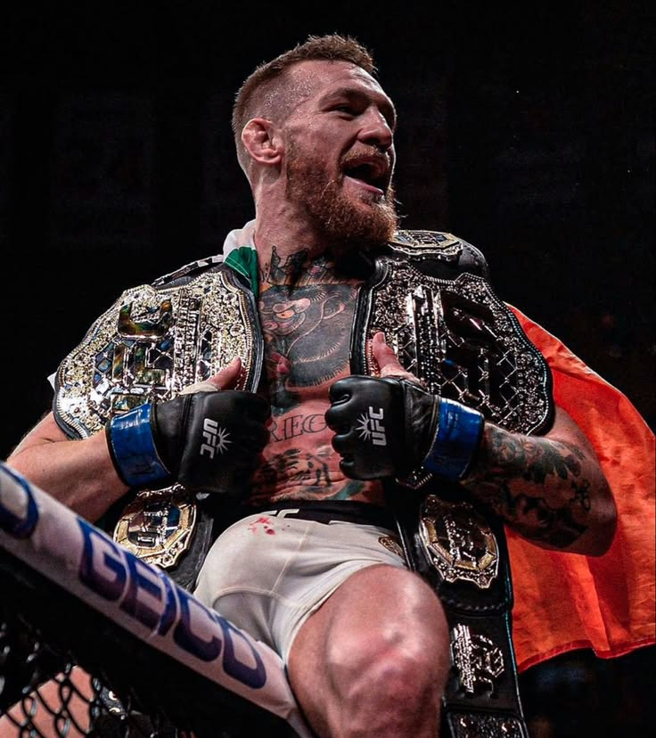
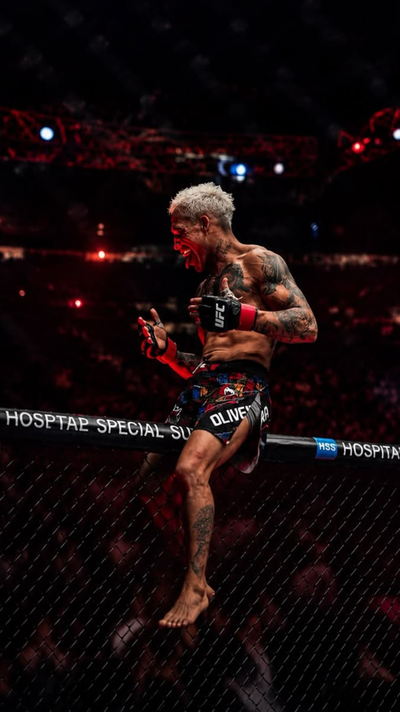
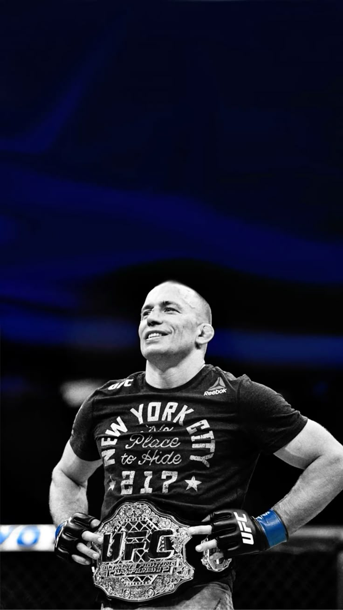
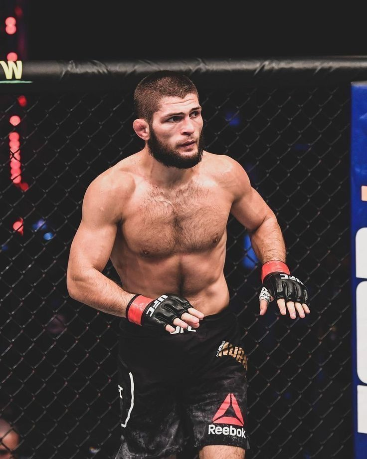
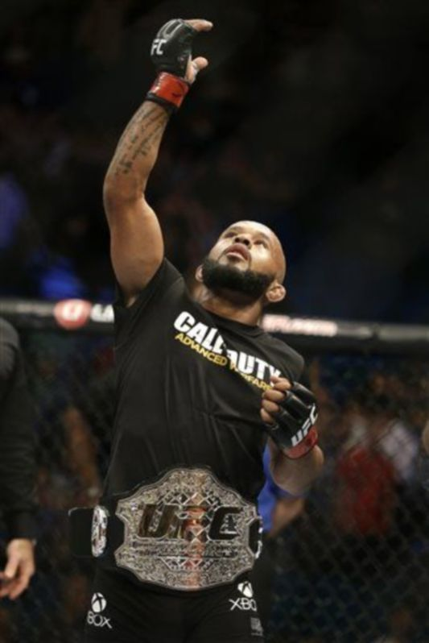

Les légendes de l'UFC
Les combattants ayant marqué les esprits des fans

Conor McGregor - Irlande
Poids Plumes / Poids Légers
Premier combattant de l'histoire de l'UFC à détenir simultanément deux ceintures de champion incontesté dans deux catégories différentes (Featherweight et Lightweight). Il a révolutionné la dimension médiatique de l'UFC grâce à son ampleur et son franc-parler, adoré par certains et détesté par d'autres. Il reste l'homme qui a propulsé le MMA sur la plus grande scène mondiale.

Charles Oliveira - Brésil
Poids Légers
Détenteur du record de finishs à l'UFC (remporter un combat avant la limite par soumission ou KO), il possède un style agressif mêlant le Jiu-Jitsu Brésilien, dont il est expert, et le Muay-Thaï. Très apprécié du public pour son humilité et son identité visuelle, il incarne surtout une résilience hors norme : alors que les médecins lui prédisaient enfant qu'il ne pourrait jamais faire de sport à cause d'un souffle au cœur et de rhumatismes articulaires, il a déjoué tous les pronostics pour devenir champion du monde des poids légers.

Georges Saint-Pierre - Canada
Poids Mi-moyens / Poids moyens
Georges Saint-Pierre vient du Karaté Kyokushin et entre dans le MMA avec uniquement quelques bases dans les autres domaines, mais chez lui, un unique mot résonne : le travail. Devenu champion des poids mi-moyens puis des poids moyens, il s'est imposé comme un combattant ultra-complet et intelligent, capable de s'adapter à toutes les situations. Adoré pour son humilité inégalable et sa gentillesse sincère, il n'est pas uniquement une légende de l'octogone, mais une véritable inspiration pour bon nombre de personnes.

Khabib Nurmagomedov - Russie
Poids légers
Champion invaincu des poids légers (29-0), Khabib Nurmagomedov a imposé une domination sans précédent dans l'octogone grâce à une lutte et un sambo étouffants. Capable d'épuiser mentalement et physiquement tous ses adversaires sans jamais saigner ni perdre un combat, il s'est retiré au sommet de son art en 2020 après avoir honoré la promesse faite à sa mère suite au décès de son père et entraîneur, Abdulmanap.

Demetrious Johnson - États-Unis
Poids mouches
Surnommé « Mighty Mouse », Demetrious Johnson est considéré comme l'un des combattants les plus complets et techniques de l'histoire du MMA. Premier champion des poids mouches de l'UFC, il a défendu sa ceinture à onze reprises consécutives, un record historique, grâce à sa vitesse fulgurante, son intelligence de combat et sa maîtrise parfaite de toutes les disciplines.